De live Pager
Alle meldingen van de laatste 24 uur in één tijdlijn, per dag gegroepeerd. Met de tellingen van vandaag per hulpdienst en een LIVE-label voor alles van de laatste tien minuten. Meldingen die je al hebt geopend worden grijs.
Live uit gemeente Apeldoorn
Brandweer, ambulance, politie en traumaheli in de gemeente Apeldoorn. Op de kaart, met het weer ter plaatse en als pushmelding. Nu als app voor iPhone, iPad, Mac, Apple Watch en Apple TV.
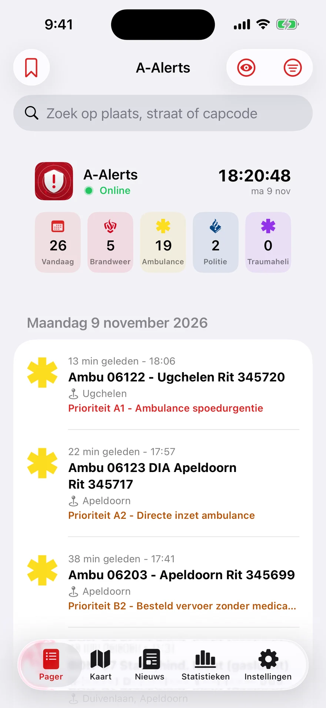
De app
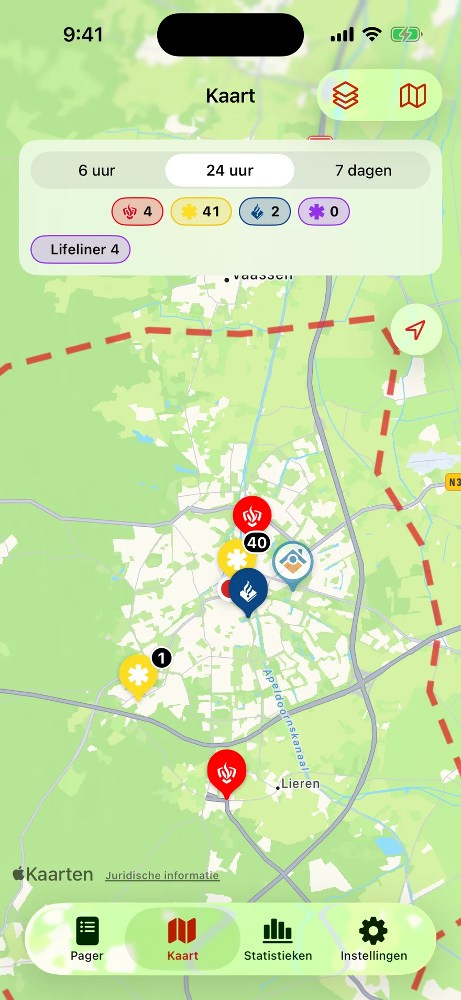
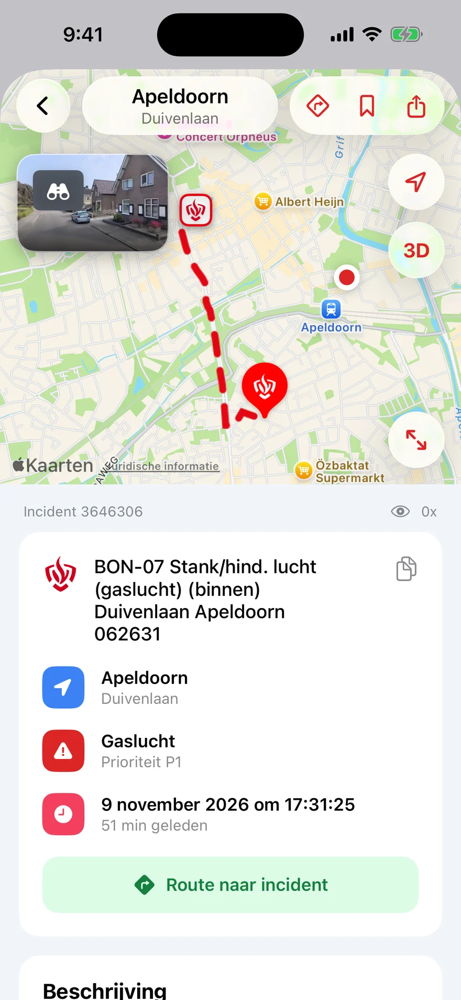
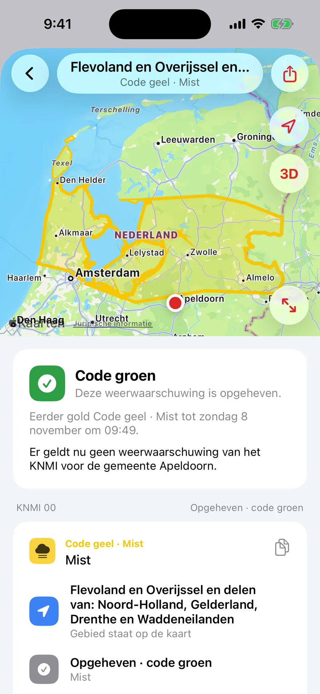
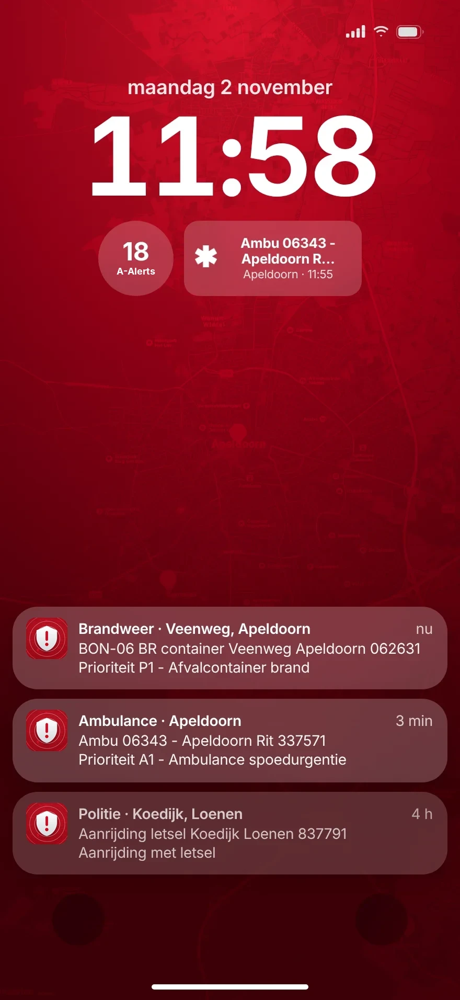
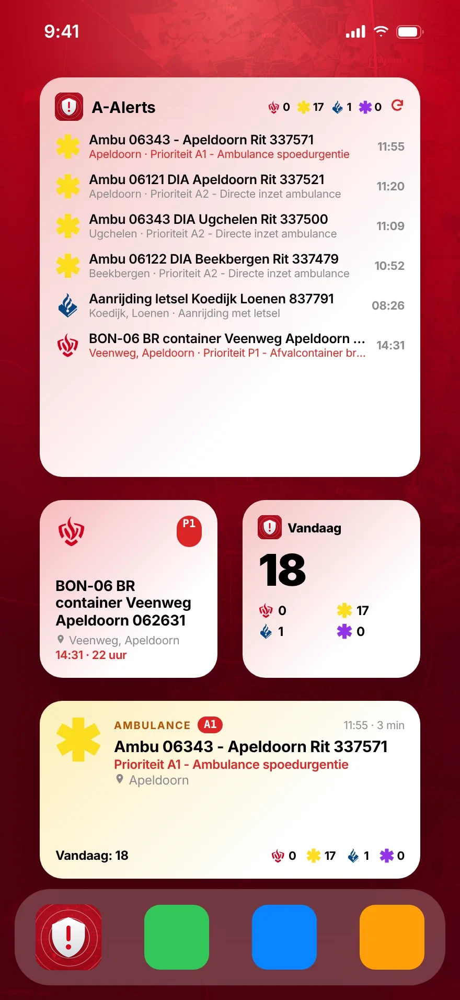
Alle meldingen van de laatste 24 uur in één tijdlijn, per dag gegroepeerd. Met de tellingen van vandaag per hulpdienst en een LIVE-label voor alles van de laatste tien minuten. Meldingen die je al hebt geopend worden grijs.
Apple Kaarten met de vertrouwde markers van brandweer, ambulance, politie en Lifeliner. Meldingen op dezelfde plek komen netjes in een cirkel te staan.
Een grote kaart met Look Around-preview, de prioriteit, categorie, capcodes en voertuigen. En met één tik naar Apple Kaarten.
Bij elke melding de METEO-gegevens van Apple Weer, op het tijdstip en de plek van de melding: temperatuur, bewolking, windrichting en windsnelheid.
Echte pushmeldingen voor jouw plaatsen, hulpdiensten en prioriteiten. Met een stille modus, en kritieke A1- en P1-meldingen die er toch doorheen komen.
De laatste melding, een lijst of de cijfers van vandaag op je beginscherm, vergrendelscherm, Mac-bureaublad en Apple Watch-wijzerplaat.
Op al je apparaten
Je instellingen en bewaarde meldingen gaan via iCloud mee naar al je apparaten. Inloggen met Apple is optioneel.
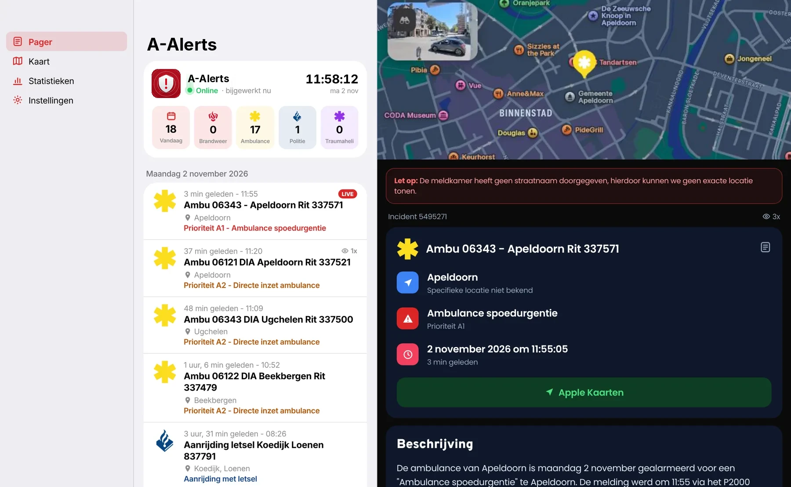
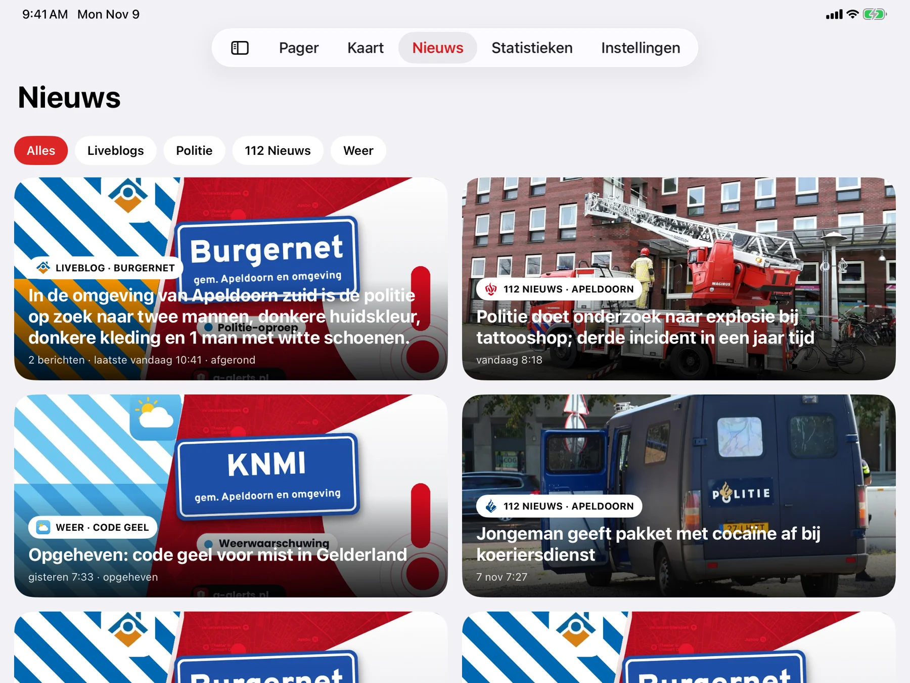
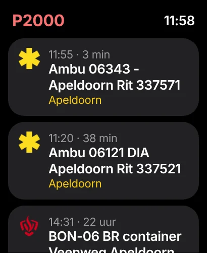
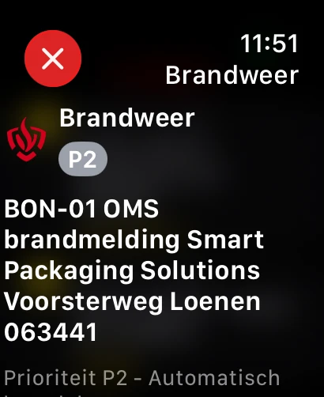
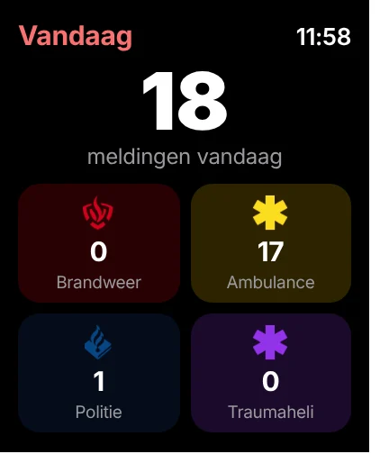
Nieuw · Apple TV
Zet P2000 Apeldoorn op een tv in de kazerne, de post of de woonkamer. De kaart gaat zelf langs de laatste meldingen en een nieuwe melding verschijnt direct groot in beeld, met een alarmscherm bij spoed.
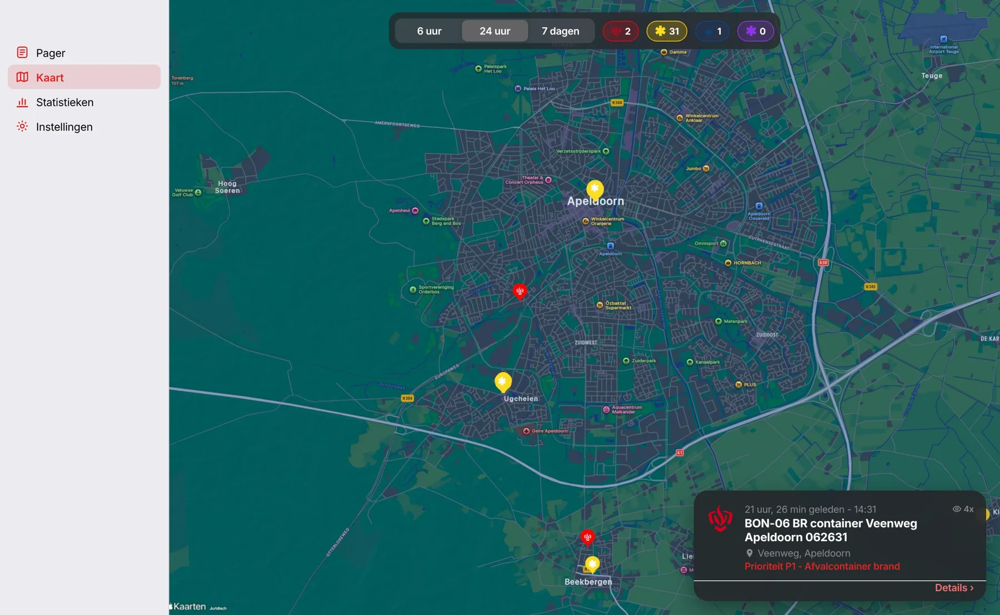
Mijn buurt
Kies een straal van 0,5 tot 25 kilometer rond je locatie of een vast punt. De lijst, de kaart, de widgets én de pushmeldingen houden zich daaraan. Je precieze locatie verlaat je toestel niet: de server krijgt alleen een afgerond middelpunt.
Privacy
Geen advertentie- of analytics-SDK's in de app. En nergens Facebook.
Inloggen met Apple is optioneel en zorgt alleen voor iCloud-sync.
Vergrendel de app met Face ID of Touch ID als je dat wilt.
De app komt binnenkort in de App Store. Tot die tijd volg je alles live in je browser.